Pure Pyromancien


Constitution : 23
Endurance : 30
Force: 14
Dexterité : 45
Intelligence : 10
Foi : 8
Description
Ce build ce concentre principalement sur les sorts de la pyromancie. Vous devez utiliser vos boules de feu et votre tempête de feu sur des groupes de personnes. Aussi, utilisez votre Grande Combustion, Uchigatana et Dragon Crest Shield sur les personnes relativement rapides. Fouet de feu doit toujours être considérés comme des techniques de dernier recour. Finalement, nous vous conseillons de toujours avoir une épée et un bouclier, car les sorts de pyromancie sont très couteux en mana.
| Armures | Armes | Sorts |
|---|---|---|
| Capuchon noir 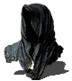 | Main pyro 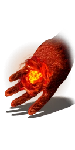 | Boule de feu  |
| Chasuble noir 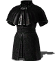 | Uchikatana 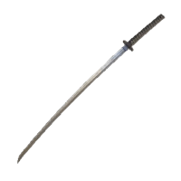 | Fouet de feu  |
| Manchette noires 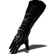 | Dragon Crest 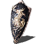 | tempête de feu  |
| Bottes lourdes 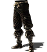 | Anneau boisé noir 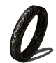 |
Grande Combustion 
|
Le Faucheur

Constitution : 10
Endurance : 20
Force: 25
Dexterité : 25
Intelligence : 40
Foi : 2
Description
La classe est destinée aux joueurs qui veulent ne faire qu une bouchée des joueurs en PvP. Remarquez que c est une classe destiné aux joueurs expérimentés, car elle utilise la magie et la dextérité. Le joueur doit s attendre à jonglé entre des sorts très couteux en mana et enchainer avec des coups léger. Alors, celui-ci doit vraiment chercher les oportunités pour vaincre ses adversaires. La plage de niveaux pour cette classe est de 50 à 90.
| Armures | Armes | Sorts |
|---|---|---|
| Masque Sombre 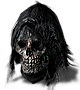 | Lame sombre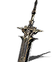 | Obre noire  |
| Armure nombre 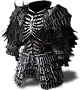 | Grande faux 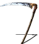 | Perles noires  |
| Gantelets sombre 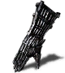 | Cravache 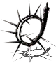 | Brouillard noir  |
| Jambières sombre 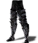 |
Anneau de calamité 
|
Poursuivants
|
L'inquisiteur
Constitution : 10
Endurance : 30
Force: 20
Dexterité : 35
Intelligence : 10
Foi : 45
Description
Si vous détestez les morts-vivants et les démons, cette classe est pour vous ! L'inquisiteur est une classe idéale pour les joueurs qui désire employer la force brute avec un mélange de miracles. En effet, cette classe utilise des armes qui sollicitent de la dextérité ce qui permet aux joueurs de donner des coups rapides et d infliger des dégâts de saignement important. De plus, celle-ci nécessite un ensemble d armures lourdes ce qui donne aux joueurs une défense supplémentaire, mais aussi elle permet de tromper l adversaire, car il pensera que vous êtes lent, mais votre dextérité élevée vous permet de rester très mobile malgré l armure lourde. Les miracles choisis pour cette classe sont extrêmement puissants puisqu ils sont efficaces sur l ensemble des ennemies du jeu à l exception de trois boss qui sont résistants aux miracles. Cependant, les deux épées choisies pour ce build permettent de compenser le désavantage contre les trois exceptions mentionnées plus haut.
| Armures | Armes | Sorts |
|---|---|---|
| Haume de grace 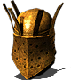 | Épée badelaire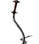 | Soin majeur |
| Grâce de l'élu 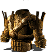 | Traceur d'or  |
Lance solaire  |
| Gantelets de grâce 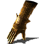 | Grâce protectrice 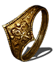 | Colère des Dieux  |
| Jambières de grâce 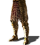 | Aîné solaire 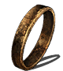 |
Retour
|